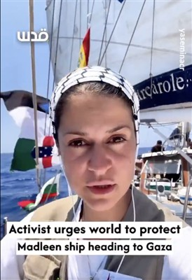
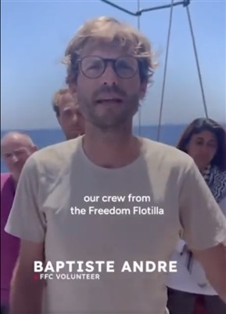

The Freedom Flotilla coalition ready to sail to Gaza. (Photo: via FFC X Page)
ON SOURCE: PALESTINE CHRONICLE
UPDATES: The Freedom Flotilla Coalition announced that the Israeli army boarded its ship Madleen, which was headed to Gaza, and contact was lost. Israeli army radio reported that Israeli naval commandos took control of the ship.
Freedom Flotilla Coalition: Israel Abducts Madleen
The Freedom Flotilla Coalition accused Israeli forces of abducting volunteers aboard the Madleen ship.
Israeli occupation army radio quoted a military source stating that the Madleen ship is currently being taken to Ashdod port after it was seized. The source added that the identities of the individuals on board are being verified for interrogation, which will take place at a naval base in Ashdod port.
Earlier, the Coalition announced that sirens sounded on board the Madleen ship, and that Israeli warships approached and surrounded it, coinciding with an Israeli drone flying overhead and spraying an unknown white liquid onto the ship.
Member of the European Parliament, Rima Hassan, broadcast images of the sirens sounding on the Madleen ship and said, “They are here,” referring to the Israeli occupation forces’ interception of the ship.
For her part, the UN Special Rapporteur for Human Rights in Palestine, Francesca Albanese, announced that Israeli fast boats reached the Madleen ship. Albanese added on platform X that the ship’s crew informed Israeli soldiers they were carrying humanitarian aid and would depart peacefully.
Albanese clarified that the Madleen ship poses no threat to Israel’s security, and Tel Aviv has no authority to stop it in international waters.
Earlier, Israeli Defense Minister Yisrael Katz threatened the Madleen ship, stating he ordered the army not to allow it to reach Gaza, and that Israel would activate every means against any attempt to break the blockade on the Strip.
The Israeli Broadcasting Authority quoted a senior security source yesterday, Sunday, saying that the army intends to take control of the Madleen ship, which is currently approaching the coast of Gaza, tow it to a port in Ashdod, arrest the activists, and then deport them outside Israel the same night.
Original Report
The humanitarian vessel Madleen, operated by the International Committee for Breaking the Siege on Gaza, is now only miles from the Gaza coastline and is reportedly facing increasing Israeli interference.
The ship, part of the Freedom Flotilla Coalition and carrying 12 international activists—including Swedish climate activist Greta Thunberg and French doctor Baptiste André—is attempting to break the Israeli naval blockade on the Gaza Strip.
On Sunday, the committee said on Facebook that the ship was experiencing “serious Israeli interference,” including suspected Israeli attempts to jam its communication and tracking signals.
“It seems Israel is jamming our colleagues’ location and signal on the Madleen vessel. This is serious.” They described the interference as “dangerous” and a direct threat to the safety of the crew. A tracking link was published so supporters can monitor the journey in real time. “You are not alone,” the committee declared, addressing besieged Palestinians in Gaza.
Speaking to Al-Jazeera, French doctor Baptiste André confirmed that drones had been hovering above the vessel for hours and that the group was in contact with multiple parties, including the French Ministry of Foreign Affairs. He added, “This is a symbolic amount, and we demand an end to the blockade imposed on Gaza,” referring to the ton of medical aid being transported.

Speaking to Al‑Jazeera, French doctor Baptiste André said drones have been detected “hovering over our heads for hours at high altitudes,” and that the group remains in contact with multiple parties, including French diplomats. He noted the medical aid—it’s symbolic but still significant—for Gaza and demanded “an end to the blockade imposed on Gaza.”
Swedish climate activist Greta Thunberg, also onboard, expressed hope they would arrive “tomorrow or the day after.” She warned, “The worst-case scenario is for the world to continue its complicity in the genocide in Gaza,” and called for an “immediate ceasefire” while seeking entry through humanitarian corridors.
The ship left Catania, Italy, on June 1 and joined the 36-strong Freedom Flotilla initiative dating to 2007.
Its name honors Madleen Kullab, Gaza’s first female professional fisherman, who lost her family and livelihood following the October 2023 Israeli offensive.
Israeli authorities have signaled imminent military action. Israeli Channel 12 reported that the navy plans to intercept Madleen and redirect it to Ashdod, potentially detaining and deporting those onboard.
Israeli Defense Minister Yisrael Katz declared: “Israel will not allow anyone to break the naval blockade on Gaza, which aims to prevent Hamas from receiving weapons.” He labeled the activists “antisemites” and said, “You’d better go back because you won’t reach Gaza”.

The Navy plans to stop the ship before it enters what Israel refers to as its territorial waters, citing enforcement of the ongoing naval blockade, according to the Anadolu News Agency. Once intercepted, the activists are expected to be handed over to Israeli authorities for deportation.
Channel 12 also noted that the wide international attention the mission has received will result in every stage of Israel’s operation being shared publicly on social media.
The outlet also reported that Israeli leadership had initially approved the ship’s passage but later reversed its decision to avoid setting a precedent for future missions seeking to break the blockade.
Madleen’s voyage follows a similar mission by another Freedom Flotilla vessel, Conscience, which was targeted by drones off the coast of Malta on May 2.
ON SOURCE: PALESTINE CHRONICLE